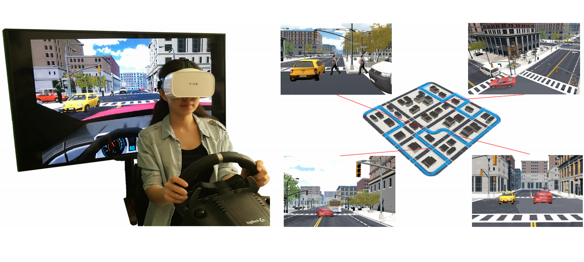
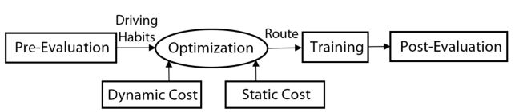
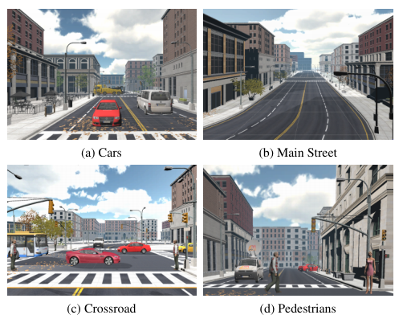
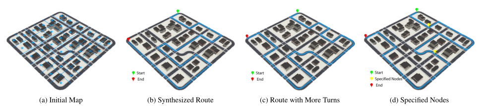

hide forever |
hide once
hide forever |
hide once
Synthesizing Personalized Training Programs for
Improving Driving Habits via Virtual Reality
Yining Lang1 |
Wei Liang1 |
Fang Xu2 |
Yibiao Zhao3 |
Lap-Fai Yu2 |
1Beijing Institute of Technology |
2University of Massachusetts Boston |
3Massachusetts Institute of Technology |
 |
Abstract
The recent popularity of consumer-grade virtual reality devices, such as Oculus Rift, HTC Vive, and Fove virtual reality headset, has enabled household users to experience highly immersive virtual environments. We take advantage of the commercial availability of these devices to provide a novel virtual reality-based driving training approach designed to help individuals improve their driving habits in common scenarios.
Our approach first identifies improper driving habits of a user when he drives in a virtual city. Then it synthesizes a pertinent
training program to help improve the users driving skills based on the discovered improper habits of the user. To apply our approach, a user first goes through a pre-evaluation test from which his driving habits are analyzed. The analysis results are used to drive optimization for synthesizing a training program. This training program is a personalized route which includes different traffic events. When the user drives along this route via a driving controller and an eye-tracking virtual reality headset, the traffic events he encounters will help him to improve his driving habits.
To validate the effectiveness of our approach, we conducted a user study to compare our virtual reality-based driving training with other training methods. The user study results show that the participants trained by our approach perform better on average than those trained by other methods in terms of evaluation score and response time and their improvement is more persistent.
Index Terms: Virtual Reality—Modeling and Simulation—Driver Training Simulator
Synthesizing Personalized Training Programs for Improving Driving Habits via Virtual Reality
Yining Lang,
Wei Liang, Fang Xu,
Yibiao Zhao,
Lap-Fai Yu
IEEE Virtual Reality 2018
@article{lang2018synthesizing,
title =
{Synthesizing Personalized Training Programs for Improving Driving Habits via Virtual Reality},
author = {Lang, Yining and Liang, Wei and Xu, Fang and Zhao, Yibiao and Yu, Lap-Fai},
journal = {IEEE Virtual Reality},
year = {2018}
publisher = {IEEE}
}
This research is supported by the UMass Boston StartUp Grant P20150000029280. This research is also supported by the National Science Foundation under award number 1565978. We acknowledge NVIDIA Corporation for graphics card donation.

|
|---|
|  |
|---|
|  |
|---|